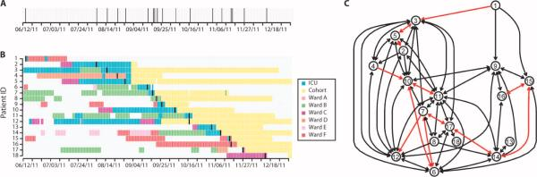
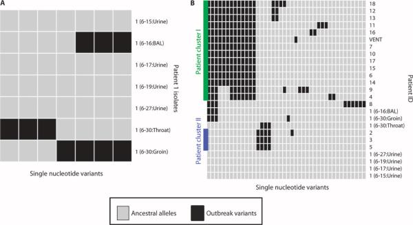
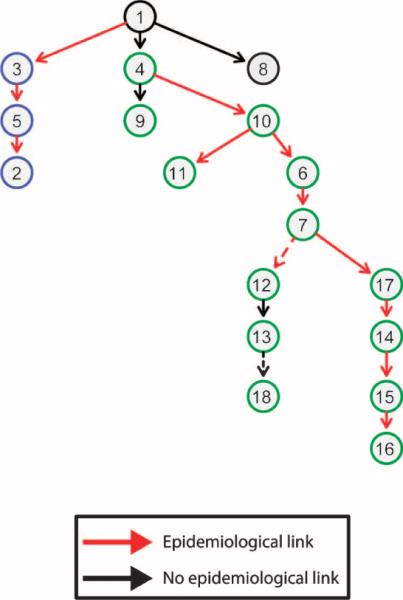
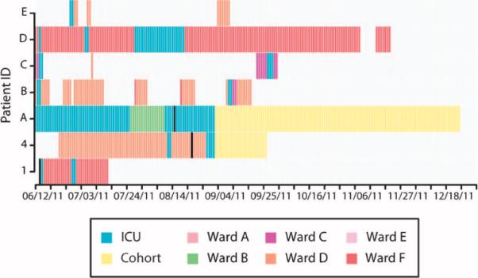

<!DOCTYPE html>
<html lang="en">
<head>
    <meta charset="UTF-8">
    <meta name="viewport" content="width=device-width, initial-scale=1.0">
    <title>Lecture 6 Study Monograph: Bacterial Genomics, Outbreak Surveillance &amp; The AMR Crisis | BIOL 3111/5111</title>
    
    <!-- Google Fonts -->
    <link rel="preconnect" href="https://fonts.googleapis.com">
    <link rel="preconnect" href="https://fonts.gstatic.com" crossorigin>
    <link href="https://fonts.googleapis.com/css2?family=Inter:wght@400;500;600;700;800&family=Merriweather:ital,wght@0,300;0,400;0,700;1,300;1,400&family=Roboto+Mono:wght@400;500;600;700&display=swap" rel="stylesheet">
    
    <!-- MathJax for Accessible Mathematical Rendering -->
    <script>
        window.MathJax = {
            tex: {
                inlineMath: [['$', '$'], ['\\(', '\\)']],
                displayMath: [['$$', '$$'], ['\\[', '\\]']],
                processEscapes: true
            }
        };
    </script>
    <script id="MathJax-script" async src="https://cdn.jsdelivr.net/npm/mathjax@3/es5/tex-mml-chtml.js"></script>

    <style>
        :root {
            --temple-cherry: #9D2235;
            --temple-cherry-dark: #781827;
            --slate-900: #0F172A;
            --slate-800: #1E293B;
            --slate-700: #334155;
            --slate-600: #475569;
            --slate-300: #CBD5E1;
            --slate-200: #E2E8F0;
            --slate-100: #F1F5F9;
            --slate-50: #F8FAFC;
            --text-main: #1E293B;
            --font-sans: 'Inter', -apple-system, BlinkMacSystemFont, sans-serif;
            --font-serif: 'Merriweather', Georgia, serif;
            --font-mono: 'Roboto Mono', monospace;
        }

        * { box-sizing: border-box; margin: 0; padding: 0; }

        body {
            font-family: var(--font-sans);
            color: var(--text-main);
            background-color: var(--slate-50);
            line-height: 1.7;
            -webkit-font-smoothing: antialiased;
        }

        .monograph-container {
            max-width: 880px;
            margin: 0 auto;
            background: #FFFFFF;
            padding: 48px 56px;
            box-shadow: 0 4px 20px rgba(15, 23, 42, 0.05);
            border-left: 1px solid var(--slate-200);
            border-right: 1px solid var(--slate-200);
            min-height: 100vh;
        }

        header {
            border-bottom: 2px solid var(--slate-200);
            padding-bottom: 24px;
            margin-bottom: 36px;
        }

        .course-meta {
            display: flex;
            justify-content: space-between;
            align-items: center;
            font-family: var(--font-mono);
            font-size: 0.82rem;
            font-weight: 700;
            color: var(--temple-cherry);
            text-transform: uppercase;
            letter-spacing: 0.05em;
            margin-bottom: 12px;
        }

        h1 {
            font-size: 2.2rem;
            font-weight: 900;
            color: var(--slate-900);
            line-height: 1.25;
            letter-spacing: -0.025em;
            margin-bottom: 12px;
        }

        .monograph-subtitle {
            font-size: 1.10rem;
            color: var(--slate-600);
            font-weight: 400;
            margin-bottom: 18px;
            line-height: 1.55;
        }

        .author-card {
            display: flex;
            flex-wrap: wrap;
            gap: 16px 28px;
            font-size: 0.88rem;
            color: var(--slate-600);
            background: var(--slate-50);
            padding: 12px 18px;
            border-radius: 6px;
            border: 1px solid var(--slate-200);
            margin-bottom: 16px;
        }

        .citation-box {
            background: #FFF5F5;
            border: 1.5px solid #FED7D7;
            border-left: 5px solid var(--temple-cherry);
            border-radius: 4px;
            padding: 16px 20px;
            font-size: 0.90rem;
            line-height: 1.55;
            color: #742A2A;
            margin: 20px 0 32px 0;
        }
        .citation-box a {
            color: var(--temple-cherry);
            font-weight: 700;
            text-decoration: underline;
        }

        h2 {
            font-size: 1.48rem;
            font-weight: 800;
            color: var(--slate-900);
            margin-top: 42px;
            margin-bottom: 16px;
            padding-bottom: 8px;
            border-bottom: 1.5px solid var(--slate-200);
            letter-spacing: -0.015em;
        }

        h3 {
            font-size: 1.18rem;
            font-weight: 700;
            color: var(--slate-800);
            margin-top: 28px;
            margin-bottom: 12px;
        }

        p {
            font-size: 1.02rem;
            color: var(--slate-700);
            margin-bottom: 16px;
            line-height: 1.68;
        }

        strong {
            color: var(--slate-900);
        }

        .key-concept-box {
            background: #F8FAFC;
            border: 1.5px solid #CBD5E1;
            border-left: 5px solid #0284C7;
            border-radius: 4px;
            padding: 18px 22px;
            margin: 24px 0;
        }
        .key-concept-box h4 {
            font-size: 1.02rem;
            font-weight: 800;
            color: #0369A1;
            margin-bottom: 6px;
            text-transform: uppercase;
            letter-spacing: 0.04em;
            font-family: var(--font-mono);
        }

        .figure-card {
            background: #FFFFFF;
            border: 1.5px solid var(--slate-300);
            border-radius: 6px;
            padding: 20px;
            margin: 28px 0;
            box-shadow: 0 2px 8px rgba(0,0,0,0.04);
            text-align: center;
        }
        .figure-card img {
            max-width: 100%;
            height: auto;
            border-radius: 4px;
            border: 1px solid var(--slate-200);
            margin-bottom: 14px;
        }
        .figure-caption {
            font-size: 0.88rem;
            color: var(--slate-600);
            text-align: left;
            line-height: 1.55;
            border-top: 1px solid var(--slate-200);
            padding-top: 10px;
        }
        .figure-caption strong {
            color: var(--slate-900);
        }

        .data-table {
            width: 100%;
            border-collapse: collapse;
            font-size: 0.92rem;
            margin: 20px 0;
        }
        .data-table th, .data-table td {
            padding: 10px 14px;
            border: 1px solid var(--slate-200);
            text-align: left;
        }
        .data-table th {
            background: #F1F5F9;
            color: var(--slate-800);
            font-weight: 700;
        }
        .data-table tr:nth-child(even) {
            background: #F8FAFC;
        }

        .quiz-callout-card {
            background: #FFFBEB;
            border: 2px solid #FCD34D;
            border-left: 6px solid #D97706;
            border-radius: 6px;
            padding: 24px 28px;
            margin: 36px 0;
        }
        .quiz-callout-card h3 {
            color: #92400E;
            margin-top: 0;
            margin-bottom: 10px;
            display: flex;
            align-items: center;
            gap: 8px;
        }

        .btn-download {
            display: inline-flex;
            align-items: center;
            gap: 8px;
            background: var(--temple-cherry);
            color: #FFFFFF;
            padding: 10px 20px;
            border-radius: 4px;
            text-decoration: none;
            font-weight: 700;
            font-size: 0.95rem;
            box-shadow: 0 2px 4px rgba(0,0,0,0.1);
            transition: background 0.15s ease;
            margin-top: 12px;
        }
        .btn-download:hover {
            background: var(--temple-cherry-dark);
        }

        footer {
            margin-top: 56px;
            padding-top: 24px;
            border-top: 1.5px solid var(--slate-200);
            font-size: 0.85rem;
            color: var(--slate-600);
            display: flex;
            justify-content: space-between;
            align-items: center;
        }
    </style>
</head>
<body>
    <div class="monograph-container">
        <header>
            <div class="course-meta">
                <span>BIOL 3111 / 5111: Genomics in Medicine</span>
                <span>Fall 2026 &bull; Week 6 Reading Guide</span>
            </div>
            <h1>Bacterial Genomics: Commensals vs. Pathogens (Good vs. Evil)</h1>
            <div class="monograph-subtitle">
                From the 1:1 human-to-microbe cell ratio and FMT ecological reconstitution to whole-genome outbreak surveillance and the antimicrobial resistance crisis.
            </div>
            <div class="author-card">
                <div><strong>Instructor:</strong> Prof. Sergei Pond</div>
                <div><strong>Department:</strong> Biology, Temple University</div>
                <div><strong>Pre-Class Canvas Quiz:</strong> Thursday, Oct 1, 2026 (00:00 &ndash; 20:00 EDT)</div>
            </div>
        </header>

        <section class="citation-box">
            <strong>Required Primary Literature for this Reading Assignment:</strong>
            <ol style="margin-left: 20px; margin-top: 8px;">
                <li style="margin-bottom: 8px;">
                    <strong>Snitkin et al. (2012):</strong> <em>"Tracking a Hospital Outbreak of Carbapenem-Resistant Klebsiella pneumoniae with Whole-Genome Sequencing."</em> <strong>Science Translational Medicine</strong> 4, 148ra116. DOI: <a href="https://doi.org/10.1126/scitranslmed.3004129" target="_blank">10.1126/scitranslmed.3004129</a> | PMCID: <a href="https://www.ncbi.nlm.nih.gov/pmc/articles/PMC3521604/" target="_blank">PMC3521604</a>.
                </li>
                <li>
                    <strong>van Nood et al. (2013):</strong> <em>"Duodenal Infusion of Donor Feces for Recurrent Clostridium difficile."</em> <strong>New England Journal of Medicine</strong> 368:407&ndash;415. DOI: <a href="https://doi.org/10.1056/NEJMoa1205037" target="_blank">10.1056/NEJMoa1205037</a>.
                </li>
            </ol>
        </section>

        <section>
            <h2>1. Executive Summary &amp; The Commensal/Pathogen Paradox</h2>
            <p>
                In the first five weeks of this course, our lens focused almost exclusively on the eukaryotic human host genome—from chromosomal aneuploidies and copy number variants (Lecture 4) to non-coding switches, splicing QTLs, and epigenetic methylation clocks (Lecture 5).
            </p>
            <p>
                In <strong>Lecture 6</strong>, we confront a biological reality: the human body is not a monoculture. We live as an integrated meta-organism, colonized by trillions of bacteria across our skin, respiratory mucosa, and gastrointestinal tract. This week explores the tension between <strong>commensal harmony</strong> (which protects against lethal infections) and <strong>antibiotic-resistant pathogens</strong> (which evade hospital infection control and threaten modern medicine).
            </p>

            <div class="key-concept-box">
                <h4>Core Concept: The Two Complementary Paradigms of Lecture 6</h4>
                <p style="margin-bottom: 6px;">
                    <strong>1. The Commensal Ecosystem ("Good"):</strong> Commensal microbes maintain <strong>colonization resistance</strong>—a biological barrier preventing pathogen invasion by consuming nutrients and synthesizing inhibitory secondary bile acids. When broad-spectrum antibiotics wipe out this protective shield, <em>Clostridioides difficile</em> germinates. <strong>van Nood et al. (2013)</strong> proved that restoring gut ecological diversity via Fecal Microbiota Transplantation (FMT) cures recurrent <em>C. diff</em> with a ~90% success rate, so overwhelmingly superior to vancomycin that the trial was halted early for ethical reasons.
                </p>
                <p style="margin-bottom: 0;">
                    <strong>2. The Outbreak Detective ("Evil"):</strong> In hospital intensive care units, multidrug-resistant pathogens disseminate stealthily. Classical molecular typing (pulsed-field gel electrophoresis, 7-gene MLST) lacks the resolution to distinguish clonal transmission from independent introductions. <strong>Snitkin et al. (2012)</strong> used real-time <strong>Whole-Genome Sequencing (WGS)</strong> to track 41 single-nucleotide variants (SNVs) across 18 patients at the NIH Clinical Center, reconstructing cryptic transmission routes through silent patient carriers and contaminated equipment.
                </p>
            </div>
        </section>

        <section>
            <h2>2. The Commensal Gut: The 1:1 Cell Count Rule &amp; Colonization Resistance</h2>
            <p>
                For decades, medical textbooks repeated the urban legend that bacterial cells outnumber human cells by 10 to 1. In 2016, a rigorous quantitative audit by <strong>Sender, Fuchs, and Milo (Cell 2016)</strong> dismantled this myth:
            </p>
            <ul>
                <li style="margin-left: 20px; margin-bottom: 8px;"><strong>Human Cell Count:</strong> $pprox 3.0 	imes 10^{13}$ cells (the vast majority being anucleated red blood cells).</li>
                <li style="margin-left: 20px; margin-bottom: 8px;"><strong>Bacterial Cell Count:</strong> $pprox 3.8 	imes 10^{13}$ cells (residing overwhelmingly in the colon).</li>
                <li style="margin-left: 20px; margin-bottom: 8px;"><strong>The Ratio:</strong> Roughly <strong>1:1</strong> by cell count, but only $pprox 200	ext{ grams}$ by total physical biomass!</li>
            </ul>
            <p>
                However, while the cell counts are balanced, the <strong>genetic disparity</strong> is staggering. While the human genome contains $pprox 20,000$ protein-coding genes, the gut microbiome contains an estimated <strong>2 to 10+ million non-redundant bacterial genes</strong>. This microbial metagenome produces essential metabolic machinery: fermenting indigestible dietary fibers into <strong>short-chain fatty acids (SCFAs: butyrate, acetate, propionate)</strong>, synthesizing vitamins (K, B12), and calibrating mucosal T regulatory cells.
            </p>

            <h3>The Bile Acid Switch: Mechanism of Colonization Resistance</h3>
            <p>
                The primary defense against <em>Clostridioides difficile</em> is metabolic competition mediated by bile acids:
            </p>
            <ol style="margin-left: 24px; line-height: 1.6; margin-bottom: 16px;">
                <li>The human liver secretes <strong>primary bile acids</strong> (e.g., taurocholic acid, cholate) into the duodenum to emulsify dietary fats. Primary bile acids act as direct molecular triggers that stimulate dormant <em>C. difficile</em> spores to germinate into toxin-producing vegetative cells.</li>
                <li>Healthy commensal bacteria (specifically members of <em>Clostridium</em> clusters IV and XIVa, such as <em>Clostridium scindens</em>) express bile acid $7lpha$-dehydroxylase enzymes that convert primary bile acids into <strong>secondary bile acids</strong> (e.g., deoxycholic acid, lithocholic acid).</li>
                <li><strong>Secondary bile acids actively inhibit vegetative <em>C. diff</em> growth.</strong> When broad-spectrum antibiotics (clindamycin, cephalosporins, fluoroquinolones) kill these commensals, secondary bile acid production plummets, primary bile acids accumulate, and <em>C. difficile</em> rapidly overgrows, releasing cytotoxic toxins A and B (TcdA / TcdB) that cause pseudomembranous colitis.</li>
            </ol>
        </section>

        <section>
            <h2>3. van Nood et al. (NEJM 2013): Reconstituting the Gut Ecosystem</h2>
            <p>
                Traditional therapy for recurrent <em>C. difficile</em> was oral vancomycin. However, vancomycin is an antibiotic: while it kills vegetative <em>C. diff</em>, it also suppresses the recovering commensal flora, trapping patients in an endless cycle of post-treatment relapses.
            </p>
            <p>
                In 2013, <strong>van Nood and colleagues</strong> conducted the first randomized controlled trial comparing three regimens:
            </p>
            <table class="data-table">
                <thead>
                    <tr>
                        <th>Treatment Arm</th>
                        <th>Intervention Regimen</th>
                        <th>Cure Without Relapse (10 wks)</th>
                    </tr>
                </thead>
                <tbody>
                    <tr>
                        <td><strong>FMT Group (Donor Feces)</strong></td>
                        <td>4-5 days of oral vancomycin + bowel lavage + duodenal infusion of donor feces</td>
                        <td><strong>13 / 16 (81.3%)</strong> after 1st infusion<br><strong>15 / 16 (93.8%)</strong> after 2nd infusion</td>
                    </tr>
                    <tr>
                        <td><strong>Vancomycin Alone</strong></td>
                        <td>14 days of standard oral vancomycin (500 mg 4x daily)</td>
                        <td><strong>4 / 13 (30.8%)</strong></td>
                    </tr>
                    <tr>
                        <td><strong>Vancomycin + Bowel Lavage</strong></td>
                        <td>14 days of oral vancomycin + whole-bowel irrigation on day 4 or 5</td>
                        <td><strong>3 / 13 (23.1%)</strong></td>
                    </tr>
                </tbody>
            </table>

            <p>
                <strong>The Ethical Trial Termination:</strong> The study was originally designed to enroll 120 patients. However, after the first interim audit of 43 patients, the Data and Safety Monitoring Board (DSMB) unanimously recommended <strong>immediate trial termination</strong>. The superiority of donor feces infusion over vancomycin was so decisive ($P < 0.001$) that continuing to randomize suffering patients to standard antibiotic monotherapy was deemed medically and ethically indefensible. Control patients with recurrent CDI were immediately offered rescue FMT.
            </p>
            <p>
                <strong>Microbial Diversity Restoration (Figure 3):</strong> Using 16S rRNA gene profiling and <strong>Simpson's reciprocal diversity index</strong>, van Nood et al. proved that pre-infusion patients had severely impoverished, dysbiotic gut flora dominated by Proteobacteria. Within 14 days of FMT, recipient diversity surged by several orders of magnitude to become indistinguishable from healthy donors, permanently re-establishing colonization resistance.
            </p>
        </section>

        <section>
            <h2>4. The Genomic Outbreak Detective: Snitkin et al. (Sci Transl Med 2012)</h2>
            <p>
                While commensal ecosystems heal, hospital-acquired superbugs kill. In June 2011, Patient 1 was admitted to the Intensive Care Unit (ICU) of the <strong>NIH Clinical Center</strong> in Bethesda, Maryland—the primary intramural clinical research hospital of the U.S. government.
            </p>
            <p>
                Patient 1 was transferred from New York City and was known to carry <strong>carbapenem-resistant <em>Klebsiella pneumoniae</em> (CRKP)</strong> producing the plasmid-borne <em>bla</em><sub>KPC</sub> carbapenemase gene. The hospital immediately placed Patient 1 in enhanced contact isolation (private room, dedicated equipment, universal gloves and gowns). She was discharged on July 15.
            </p>
            <p>
                <strong>The Outbreak Surprise:</strong> For three weeks, surveillance cultures were completely negative. Then, on <strong>August 5</strong>, Patient 2 tested positive for carbapenem-resistant <em>K. pneumoniae</em> in the ICU. Over the following months, the pathogen swept through the hospital, colonizing <strong>18 patients</strong>. Despite extreme infection control measures—including cohorting staff, dedicated nursing teams, and vaporized hydrogen peroxide decontamination of ICU rooms—<strong>11 patients died</strong> (6 deaths directly attributable to <em>Klebsiella</em> bacteremia).
            </p>

            <div class="figure-card">
                
                <div class="figure-caption">
                    <strong>Figure 1 (Snitkin et al., 2012): Outbreak Timeline and Ward Overlap.</strong> (A) Timeline of first positive cultures across 18 patients. (B) Spatial and temporal patient traces across hospital wards (ICU in blue, cohorted areas in yellow, general wards in red/green/pink). (C) The unresolvable web of potential transmission links if epidemiological overlap alone is used.
                </div>
            </div>

            <h3>Why Traditional Molecular Typing Failed</h3>
            <p>
                Hospital infection control initially tested Patient 1 and Patient 2 using standard clinical tools: <strong>pulsed-field gel electrophoresis (PFGE)</strong> and <strong>multi-locus sequence typing (MLST)</strong>. Both isolates were identified as <strong>ST258</strong>.
            </p>
            <p>
                However, this finding was virtually useless: ST258 is an epidemic, highly clonal lineage accounting for over 70% of all KPC infections in the United States! Standard molecular typing could not tell whether Patient 2 had caught the strain from Patient 1 inside the hospital, or whether Patient 2 had brought in a completely separate ST258 strain from the community.
            </p>
        </section>

        <section>
            <h2>5. Whole-Genome Sequencing: Finding 41 Needles in a 6-Megabase Haystack</h2>
            <p>
                To resolve the outbreak, the NIH team turned to <strong>Whole-Genome Sequencing (WGS)</strong>, sequencing the complete ~6 million base-pair genomes of all patient isolates. Across all 18 patients, they discovered a grand total of just <strong>41 high-confidence Single-Nucleotide Variants (SNVs)</strong>. These 41 single-letter spelling differences acted as ultra-precise genetic barcodes.
            </p>

            <div class="figure-card">
                
                <div class="figure-caption">
                    <strong>Figure 2 (Snitkin et al., 2012): Single-Nucleotide Variants in Outbreak Genomes.</strong> (A) Intra-host diversity within Index Patient 1 across 4 anatomical sites. Urine isolates show the ancestral genotype (gray), while BAL/groin isolates share 3 SNVs, and the throat isolate contains 3 completely different SNVs. (B) Outbreak isolates partition into Patient Cluster 1 (green; BAL/groin derived), Patient Cluster 2 (blue; throat derived), and Patient 8.
                </div>
            </div>

            <h3>The Breakthrough: Intra-Host Bacterial Diversity (Figure 2A)</h3>
            <p>
                Crucially, the investigators sequenced <strong>seven separate isolates</strong> taken from four different anatomical body sites of Index Patient 1 over her 4-week stay:
            </p>
            <ul>
                <li style="margin-left: 20px; margin-bottom: 6px;"><strong>Urine (4 isolates):</strong> Matched the ancestral reference genome at all 7 variant positions (0 SNVs).</li>
                <li style="margin-left: 20px; margin-bottom: 6px;"><strong>Bronchoalveolar Lavage (BAL) &amp; Groin:</strong> Shared <strong>3 specific SNVs</strong> relative to the urine isolate.</li>
                <li style="margin-left: 20px; margin-bottom: 6px;"><strong>Throat:</strong> Exhibited <strong>3 completely different SNVs</strong> distinct from the BAL/groin isolates.</li>
            </ul>
            <p>
                <strong>The Critical Diagnostic Lesson:</strong> If the NIH investigators had sequenced only Patient 1's initial urine culture, they would have seen that every subsequent outbreak patient had 3 or more SNVs that Patient 1 lacked—and would have falsely concluded that Patient 1 was not the source of the outbreak! In reality, Patient 1 had been colonized for months and harbored <em>intra-host sub-populations</em>. She seeded <strong>three independent transmission chains</strong> into the hospital: Cluster 1 received the BAL/groin variant, while Cluster 2 received the throat variant.
            </p>
        </section>

        <section>
            <h2>6. Resolving Hidden Routes: The Transmission Map &amp; Silent Carriers</h2>
            <p>
                By combining genomic SNVs with hospital patient traces, the authors constructed the <strong>parsimonious transmission map (Figure 3)</strong>, transforming the chaotic hairball of Figure 1C into a directed transmission tree.
            </p>

            <div class="figure-card" id="focal-figure-3">
                
                <div class="figure-caption">
                    <strong>Figure 3 (Snitkin et al., 2012): Putative Map of K. pneumoniae Transmission.</strong> Nodes represent patients; arrows indicate directed transmission events. Red arrows indicate epidemiological links (patients overlapped in the same ward prior to culture). Black arrows indicate transmission events without ward overlap (silent intermediate carrier or environmental source). Dashed lines indicate equally parsimonious alternative links.
                </div>
            </div>

            <h3>Two Critical Mysteries Solved by the Map:</h3>
            <p>
                <strong>1. The Temporal Inversion Paradox (Patient 2 vs. Patient 3):</strong><br>
                Clinically, Patient 2 presented with active symptoms and tested positive on <strong>August 5</strong>. Patient 3 tested positive 10 days later on <strong>August 15</strong>. Standard epidemiology assumed Patient 2 infected Patient 3.
                <br>
                <em>The WGS Truth:</em> The transmission map places <strong>Patient 3 UPSTREAM of Patient 2</strong> ($1 
ightarrow 3 
ightarrow 5 
ightarrow 2$). Why? First, Patient 3 was housed in the ICU at the same time as Index Patient 1, whereas Patient 2 never overlapped with Patient 1. Second, Patient 2's isolate possessed a <em>private derived SNV</em> that was completely absent in Patient 1 and Patient 3. Patient 3 had been silently colonized in the ICU in July, and the strain transmitted through Patient 5 to Patient 2 before Patient 3 was ever diagnosed!
            </p>
            <p>
                <strong>2. The Silent Vector Mystery (Patient 1 to Patient 4):</strong><br>
                Patient 4 was the index case for Cluster 1, but Patient 4 never overlapped with Patient 1 in any ward (indicated by the <strong>black arrow</strong> from 1 to 4). By mining electronic health records of all 1,115 patients in the hospital (Figure 4), researchers found only <strong>five patients</strong> who overlapped first with Patient 1 and subsequently with Patient 4. Two patients (Patients B and D) had extensive overlap with both, proving that asymptomatic, uncultured patient carriers acted as silent vectors.
            </p>

            <div class="figure-card">
                
                <div class="figure-caption">
                    <strong>Figure 4 (Snitkin et al., 2012): Mining Epidemiological Traces for Asymptomatic Intermediaries.</strong> Hospital ward timelines for Patients 1, 4, and candidate intermediate carriers A through E.
                </div>
            </div>

            <h3>The Contaminated Ventilator: Environmental Persistence</h3>
            <p>
                Environmental surveillance revealed living <em>K. pneumoniae</em> on a mechanical ventilator that had been used on Patient 6. Shockingly, this ventilator had already undergone <strong>three separate cleanings: twice with quaternary ammonium and once with bleach</strong>!
            </p>
            <p>
                Whole-genome sequencing of the ventilator isolate revealed that it differed by <strong>only 1 single nucleotide variant</strong> from Patient 6's original isolate, confirming that the bacteria had survived clinical-grade chemical disinfection and remained an active infectious threat.
            </p>
        </section>

        <section>
            <h2>7. Rapid In Vivo Evolution of Colistin Resistance (Table 2)</h2>
            <p>
                The outbreak strain was resistant to all beta-lactams, carbapenems, and aminoglycosides, leaving <strong>colistin (polymyxin E)</strong>—a cationic cyclic peptide that binds bacterial lipid A and disrupts the outer membrane—as the ultimate antibiotic of last resort.
            </p>
            <p>
                During the outbreak, clinicians observed the terrifying emergence of <strong>colistin-resistant isolates</strong>:
            </p>
            <ul>
                <li style="margin-left: 20px; margin-bottom: 8px;"><strong>Patient 2:</strong> Entered the hospital with a colistin-susceptible strain. After several weeks of colistin monotherapy, Patient 2's isolate became highly resistant. Whole-genome sequencing identified a <strong>2-base-pair insertion</strong> in the coding region of a putative microcin membrane transporter, creating a premature stop codon and truncating the protein.</li>
                <li style="margin-left: 20px; margin-bottom: 8px;"><strong>Patient 8:</strong> Arrived at the hospital already harboring a colistin-resistant isolate with <strong>six unique SNVs</strong>, four of which caused amino acid substitutions (three in outer-membrane proteins).</li>
            </ul>
            <p>
                <strong>The Clinical Takeaway:</strong> When clinicians are forced to rely on monotherapy with last-line antibiotics, bacterial populations experience massive selective pressure. Within a single patient's body over just a few weeks, de novo mutations can emerge that render even the ultimate antibiotic obsolete.
            </p>
        </section>

        <!-- CANVAS QUIZ & ANNOTATION GUIDE -->
        <section class="quiz-callout-card">
            <h3>📝 Pre-Class Reading Mastery Quiz &amp; Figure Annotation Guide</h3>
            <p>
                The <strong>Lecture 6 Pre-Class Reading Quiz</strong> opens on Canvas on <strong>Thursday, October 1, 2026, at 00:00 (Midnight) and closes at 20:00 (8:00 PM EDT)</strong>.
            </p>
            <p>
                Unlike standard multiple-choice quizzes, <strong>Question 1 (2.0 Points &mdash; Mandatory Proof-of-Work Upload)</strong> requires you to download the transmission map, perform a hands-on digital/manual visual analysis, and upload your personalized annotated diagram with your verified student watermark. Submissions without the handwritten or digitally typed watermark will receive zero credit.
            </p>

            <div style="background: #FFFFFF; border: 1.5px solid #CBD5E1; border-radius: 6px; padding: 18px 20px; margin: 16px 0;">
                <h4 style="color: #9D2235; font-size: 1.02rem; margin-bottom: 8px; font-weight: 800;">Step-by-Step Instructions for Question 1 (Mandatory Proof-of-Work):</h4>
                <ol style="margin-left: 20px; line-height: 1.65; color: var(--slate-700);">
                    <li><strong>Download the Image:</strong> Download <a href="images/snitkin_fig3_transmission_map.jpg" target="_blank" style="color: #9D2235; font-weight: 700;">snitkin_fig3_transmission_map.jpg</a> to your tablet, computer, or phone.</li>
                    <li><strong>Box the Clusters:</strong> Draw a <strong>green box</strong> around Patient Cluster 1 and a <strong>blue box</strong> around Patient Cluster 2. Label each box with its founding anatomical isolate from Patient 1 (<em>BAL/Groin</em> vs. <em>Throat</em>).</li>
                    <li><strong>Annotate the Silent Vector:</strong> Circle the black arrow from Patient 1 to Patient 4 and write why it is black (zero ward overlap; mediated by asymptomatic intermediate Patients B or D).</li>
                    <li><strong>Explain the Temporal Inversion:</strong> Highlight Patient 2 and Patient 3. Add a callout box explaining why Patient 3 is upstream of Patient 2 despite Patient 2 testing positive 10 days earlier.</li>
                    <li><strong>Star the Ventilator:</strong> Place a star (★) where the contaminated ventilator isolate branches off Patient 6/7 and write its SNV divergence (1 SNV).</li>
                    <li><strong>Add Your Watermark:</strong> In the corner of the image, type or handwrite: <code>[Your Name] • [AccessNet ID] • [Date]</code>.</li>
                    <li><strong>Upload to Canvas:</strong> Save as PNG, JPG, or PDF and submit under Question 1.</li>
                </ol>
                <div style="margin-top: 14px;">
                    <a href="images/snitkin_fig3_transmission_map.jpg" download class="btn-download">
                        📥 Download Snitkin Figure 3 Template (.jpg)
                    </a>
                </div>
            </div>

            <p style="font-size: 0.90rem; color: #92400E; margin-bottom: 0;">
                <strong>Questions 2–5 (1.0 Point each):</strong> Cover intra-host diversity (Fig. 2A), FMT clinical trial ethics (van Nood Fig. 2 &amp; 3), WGS vs. PFGE/MLST, and in vivo colistin resistance mutations (Table 2).
            </p>
        </section>

        <footer>
            <div>BIOL 3111/5111: Genomics in Medicine &bull; Department of Biology &bull; Temple University</div>
            <div><a href="L6_Reading_Quiz.zip" style="color: var(--temple-cherry); font-weight: 700;">Canvas Quiz Archive (.zip)</a></div>
        </footer>
    </div>
</body>
</html>
